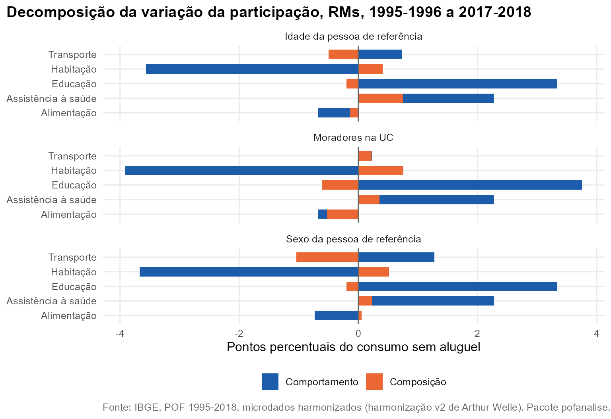

Pergunta. Entre 1995 e 2017 as famílias metropolitanas ficaram menores e mais velhas. Quanto das mudanças no orçamento vem dessa recomposição, e quanto vem de mudança de comportamento dentro de cada tipo de família?
Método. pof_decompor(), decomposição
shift-share simétrica da variação da participação de um grupo
no consumo:
- efeito comportamento: quanto a participação mudou dentro de cada tipo de UC;
- efeito composição: quanto mudou o peso de cada tipo de UC no consumo total.
A soma dos dois é a variação total. RMs, consumo sem aluguel, 1995-1996 a 2017-2018. Os tipos de UC são definidos pela idade da pessoa de referência, pelo número de moradores ou pelo sexo da pessoa de referência.
Resultados
Em quase todos os casos o comportamento domina. A saúde ganha 2,28 p.p. no orçamento; o envelhecimento das UCs explica 0,75 p.p. disso, cerca de 33%, e o restante vem de mudança de comportamento, concentrada nas UCs mais velhas: com pessoa de referência de 60 anos ou mais, a saúde passa de 11,4% para 16,2% do consumo; com até 29 anos, fica em 5,0%. O peso das UCs com pessoa de referência de 60 anos ou mais no consumo passa de 18,8% para 27,3%.
A educação ganha 3,14 p.p.; a redução do tamanho das famílias joga contra (-0,61 p.p.), porque UCs menores têm menos crianças, e o efeito comportamento (3,75 p.p.) é maior que a variação observada.

| Grupo | Corte | Periodo | Variação (p.p.) | Comportamento | Composição |
|---|---|---|---|---|---|
| Alimentação | idade | 1995 a 2017 | -0,68 | -0,54 | -0,14 |
| Alimentação | idade | 2002 a 2017 | -3,13 | -2,97 | -0,17 |
| Alimentação | tamanho | 1995 a 2017 | -0,68 | -0,15 | -0,53 |
| Alimentação | tamanho | 2002 a 2017 | -3,13 | -2,94 | -0,19 |
| Alimentação | sexo | 1995 a 2017 | -0,68 | -0,73 | 0,06 |
| Alimentação | sexo | 2002 a 2017 | -3,13 | -3,10 | -0,03 |
| Assistência à saúde | idade | 1995 a 2017 | 2,28 | 1,53 | 0,75 |
| Assistência à saúde | idade | 2002 a 2017 | 2,58 | 1,55 | 1,02 |
| Assistência à saúde | tamanho | 1995 a 2017 | 2,28 | 1,92 | 0,35 |
| Assistência à saúde | tamanho | 2002 a 2017 | 2,58 | 2,23 | 0,35 |
| Assistência à saúde | sexo | 1995 a 2017 | 2,28 | 2,04 | 0,23 |
| Assistência à saúde | sexo | 2002 a 2017 | 2,58 | 2,50 | 0,07 |
| Educação | idade | 1995 a 2017 | 3,14 | 3,33 | -0,20 |
| Educação | idade | 2002 a 2017 | 1,07 | 1,48 | -0,41 |
| Educação | tamanho | 1995 a 2017 | 3,14 | 3,75 | -0,61 |
| Educação | tamanho | 2002 a 2017 | 1,07 | 1,55 | -0,48 |
| Educação | sexo | 1995 a 2017 | 3,14 | 3,33 | -0,20 |
| Educação | sexo | 2002 a 2017 | 1,07 | 1,13 | -0,06 |
| Habitação | idade | 1995 a 2017 | -3,16 | -3,57 | 0,41 |
| Habitação | idade | 2002 a 2017 | -1,40 | -1,95 | 0,55 |
| Habitação | tamanho | 1995 a 2017 | -3,16 | -3,91 | 0,75 |
| Habitação | tamanho | 2002 a 2017 | -1,40 | -2,02 | 0,62 |
| Habitação | sexo | 1995 a 2017 | -3,16 | -3,67 | 0,52 |
| Habitação | sexo | 2002 a 2017 | -1,40 | -1,72 | 0,32 |
| Transporte | idade | 1995 a 2017 | 0,23 | 0,73 | -0,50 |
| Transporte | idade | 2002 a 2017 | 0,75 | 1,31 | -0,56 |
| Transporte | tamanho | 1995 a 2017 | 0,23 | 0,01 | 0,22 |
| Transporte | tamanho | 2002 a 2017 | 0,75 | 0,87 | -0,13 |
| Transporte | sexo | 1995 a 2017 | 0,23 | 1,27 | -1,04 |
| Transporte | sexo | 2002 a 2017 | 0,75 | 1,25 | -0,50 |
Reproduzir
dados <- pof_carregar(c(1995, 2017), dir)
d <- pof_decompor(dados, "Assistência à saúde", por = "idade", de = "1995-1996", para = "2017-2018")
d$resumo; d$grupos